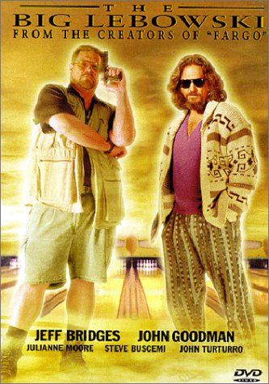

The Big Lebowski
There are two men named Jeffrey Lebowski. One is a lazy, pot smoking, White Russian drinking hippie who goes by "The Dude". The other is a self-made, handicapped, multimillionaire war veteran who lives in a huge mansion with a full time assistant. Their paths cross when the millionaire's trophy wife owes money to a known pornographer. The thugs hired by this man confront The Dude because he has the same name. The Dude, wanting payback for his now destroyed rug, seeks out the millionaire Lebowski. What follows takes the Dude and his bowling buddies Walter and Donnie on a weird tale of intrigue, kidnapping, pornography, nihilists, White Russians, and more White Russians.
Released: 1998
Director: The Cohen Brothers
Actors:
- Jeff Bridges (The Dude)
- John Goodman (Walter Sobchak)
- Julianne Moore (Maude Lebowski)
- Steve Buscemi (Theodore Donald 'Donny' Kerabatsos)
- David Huddleston (The Big Lebowski)
- Philip Seymour Hoffman (Brandt)
- Tara Reid (Bunny Lebowski)
Related Films: